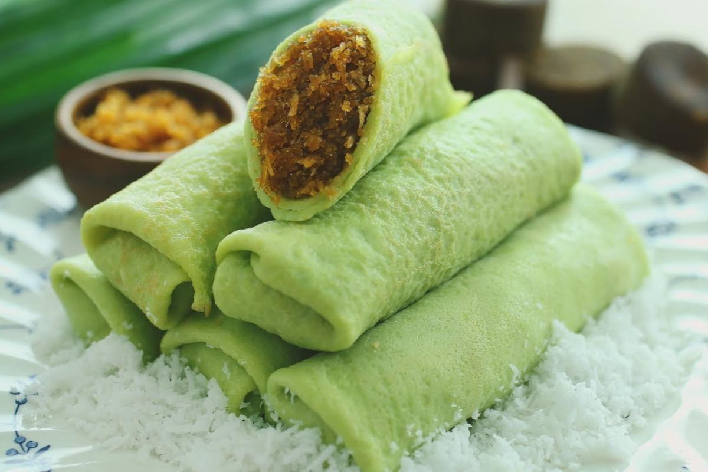

Kuih Dadar Recipe

Description
Kuih Dadar is a rolled crepe flavored with pandan juice and filled with grated coconut steeped in Gula Melaka or Malaysian palm sugar.
Ingredients
Kuih Dadar Wrap Ingredient
- 200g Plain Flour
- 1 Egg
- 300ml Coconut Milk
- 100ml Corn Oil
- 3tbsp of Pandan Juice or A Dash of Natural Green Food Coloring
Kuih Dadar Filling Ingredient
- 1 Cup of Grated Coconut White Flesh
- 150g Gula Melaka/Palm Sugar
- 1 and a half tablespoon of White Sugar
Steps
- First, for the crepe, combine half of the coconut milk with flour. Add in the egg, green colouring and corn oil; beat mixture till well-combined.
- Gradually pour in the remaining coconut milk. Continue beating for 5 minutes. Let batter stand for 30 minutes.
- Heat up an omelette pan. Pour some batter onto pan. Tilt the pan so that the batter is spread evenly thin. When sides turn dry and brittle, remove kuih.
Repeat this process till all the batter has been used up.
- To prepare the filling, fry the grated coconut till just heated up. Add in the dissolved Gula Melaka and sugar; stir till mixture is well-blended.
- When the fillings cooled, spread 2 teaspoons filling in the middle of the crepe. Roll up wrap and serve.
Back to Home